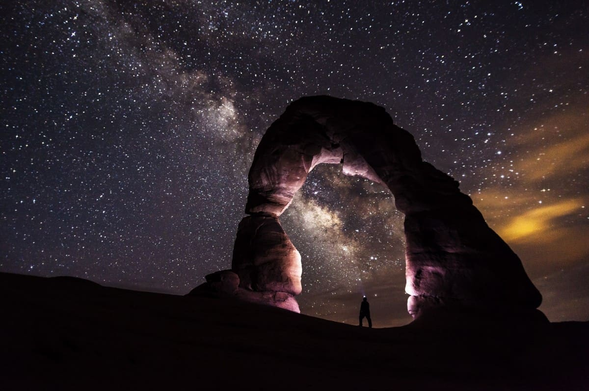

MERT SEFA ÜNAL
AKADEMİK/EĞİTİM
EĞİTİMLER
2009-2013 yıllarında İstanbul Üniversitesi Jeofizik Mühendisliği bölümünü üçüncülük ile tamamladım. Eğitim stajımı Türkiye Petrolleri Anonim Ortalığı(TPAO)‘nda gerçekleştirdim. Stajımda, Ankara’da ve sahada çalışma imkanı buldum. Sismik çalışma yöntemlerine daha ilgili oldum.
2019 yılında İstanbul Üniversitesi – Cerrahpaşa ‘da Jeofizik Mühendisliği Yüksek Lisans eğitimimi tamamladım. Yüksek lisans eğitimimde hem üniversitemde hem de İstanbul Teknik Üniversitesi(İTÜ)’nde ikinci danışman ile çalıştım. “Kama şekilli yer yapısında tuning etkisinin sismik yansıma yöntemiyle incelenmesi” konulu tezimi tamamlayarak eğitimimi tamamladım. Tez kapsamında matlab üzerinde verilen parametrelere göre sentetik sismik model oluşturan program yazdım. Bu programda farklı parametreler ile üretilen modellerin incelemesini ve değerlendirmesini yaptım.
2016-2017 yıllarında İş Sağlığı ve Güvenliği Yüksek Lisansı(Tezsiz) eğitimi tamamladım. Bununla birlikte daha önceden 2014 yılında aldığım C sınıfı iş güvenliği uzmanlığı sertifikamı; 2018 yılında B sınıfı iş güvenliği uzmanlığı sınavını geçerek yükselttim. İş güvenliği uzmanlığı döneminde yaptığım çalışmaları ve edindiğim deneyimleri bu sitede İş Güvenliği kısmında daha detaylı öğrenebilirsiniz.
2013-2018 arasında ise Anadolu Üniversitesi İşletme(Açıköğretim) bölümünü bitirdim. Bu alanda edindiğim bilgilerden hem çalışma hayatında analizler yaparken hem de girişim çalışmalarında yararlandım.
2018-2020 yılları içerisinde Web Tasarım ve Kodlama bölümünü okumaktayım. Çalıştığım sektör itibariyle yazılım alanında iş analizleri hazırladığım için bu bölümün bana yeni bakış açıları katacağını düşündüğüm için başladım. Öncesinde yazılım alanında kendimi geliştirdiğim ve front-end developer (arayüz geliştirici) seviyesine gelmeyi başarmamın etkisiyle bu bölümü tamamlamaktayım. İş analisti alanındaki tecrübe ve yetkinliklerimi bu sitede iş analisti sayfasında inceleyebilirsiniz.
Hayat büyük bir yolculuk. Gerek iş hayatında gerek eğitim hayatında çok şey öğrendim. Öğrenmeye ve gelişmeye devam ediyorum. Çevremde öğrenmek isteyenlere elimden geldiğince bildiklerimle yardım ediyorum. Ne kadar çok şey öğrensek bile evrendeki bilginin yanında çok az kalıyor. Buna rağmen öğrendiğim her şeyin çalıştığım alanlarda farklı düşünmeye etkisini fark ettikçe öğrenmeye devam etmek istiyorum.